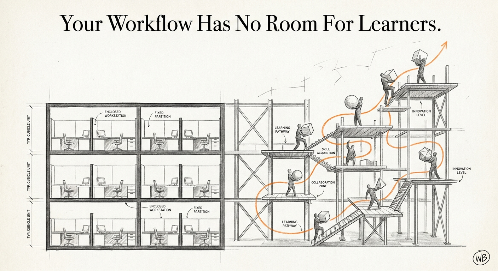

Drafted: 2026-07-03
OS Pillar: Operating Model OS
Quarterly Theme: Systems That Serve
Subject: The AI talent problem is not a talent problem
Preheader: Your workflow cannot absorb learners. That is the real bottleneck.
Insight summary: Mid-market firms are discovering that traditional upskilling and recruiting strategies cannot fill the AI talent gap because they're addressing the wrong problem—the issue isn't finding AI experts, it's building AI-ready teams from the ground up through structured apprenticeships that connect entry-level talent to real business problems.
This week: capability is being redesigned as an operating model input, not a hiring outcome.
Autonomy is not something you announce. It is something the operating model either permits or forbids. Ricardo Semler transformed Semco from a traditional manufacturer into a global case study by replacing hierarchy with autonomy on purpose. He kept his board along for the trip. The mistake most owners make is treating autonomy as a cultural value. It is a structural design choice. When the structure does not carry it, the words do not either. The Semler playbook, published this week, is less about culture and more about the redesign of decision rights that makes autonomy possible.
You cannot find AI talent. You have tried hiring. You have tried upskilling your current team. Neither is working fast enough.
The instinct is to read this as a talent problem. It is not. It is an operating model problem. Your workflows have no room for a learner who produces value while developing skills. Every job in your company is defined for someone who already knows how to do it.
That means every AI initiative requires either a fully-formed senior hire or a senior operator who does it on the side. The first is expensive and scarce. The second is why nothing ships.
Beneath this sits the people challenge. In most mid-market firms, leadership still treats talent acquisition as a hiring problem. They open a req. They interview. They wait. What they have not done is redesign the work so entry-level people contribute to AI initiatives without the business pausing for training. Until that redesign happens, "we don't have time to train" will keep being the rational objection.
The frame that resolves this is the Apprenticeship Operating Model. An apprenticeship is not a program. It is a design decision inside how work flows. Some portion of the work is structured so a learner produces value on day one. Skill develops on the same timeline the work does. The learner is not a cost center waiting to become useful.
Achieve Partners, speaking on the ACG podcast, argues upskilling alone will not fill today's AI talent gap. The firm runs apprenticeship at the top of the talent funnel for its portfolio companies. Its cofounder reports demonstrable impact on EBITDA growth. This is not philanthropy. It is a talent supply chain built inside the operating model.
Three design moves matter. First, decompose the AI initiative into three tiers: what a senior must own, what a mid-level carries, what a learner can produce. Most owners have never done this decomposition. The senior person absorbs all of it. Second, write the workflow so the learner's output feeds into the senior's review, not the reverse. Third, define progression by output milestones, not training hours.
What this removes is the structural obstacle that quietly kills AI initiatives in mid-market firms. The obstacle is the belief that you cannot afford to train while you are trying to ship. When the operating model carries the training, you do not have to choose. The team stops asking permission to hire. They start designing scopes learners can hold.
This week, pick one AI initiative already on your roadmap. Decompose it into three tiers of work. For each tier, name the smallest unit of work a learner could own by the end of week two. If you cannot name that unit, the initiative is designed to require a hire you cannot find.
A recent Fast Company piece surfaces data from Writer's AI Adoption in the Enterprise research: 94% of executives face board demands to do more with less. 78% report AI creating tension between IT and other lines of business. 61% of C-suite executives fear losing their jobs over the rollout. In 2025, CEO departures hit a record high, with recent exits from Adobe, Coca-Cola, and Walmart.
For the mid-market operator, the reading of this shift is direct. When pressure at the top is this severe, the failure mode is not inaction. It is the wrong action executed with force. Tools bought on hype. Mandates without training. Layoffs framed as AI efficiency. What looks like AI strategy is often panic wearing strategy's clothes. In our experience, the mid-market advantage right now is the discipline of sequence. Build the operating model that can absorb the tool before you buy the tool.
Scribe - A tool that auto-generates step-by-step process documentation from any workflow you record on screen. It matters because you cannot decompose work into learner-owned tiers if the steps live only in senior operators' heads. Free tier available at scribehow.com.
Watch for this week: count the decisions your team escalated to you that a learner with a written workflow could have handled. Not the strategic calls. The routine ones with a knowable answer. That count is the size of the apprenticeship opportunity you have not designed yet. Every uncounted escalation is a scope you failed to write down.
If something in this issue landed, reply - I read every response.
If this is useful to someone in your network, forward it - it takes ten seconds and it's the highest compliment.
When you're ready to work together directly, here is how we start: [link]
Draft generated by the pipeline. Review and edit before sending.